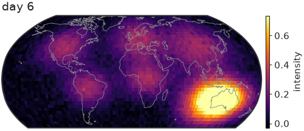
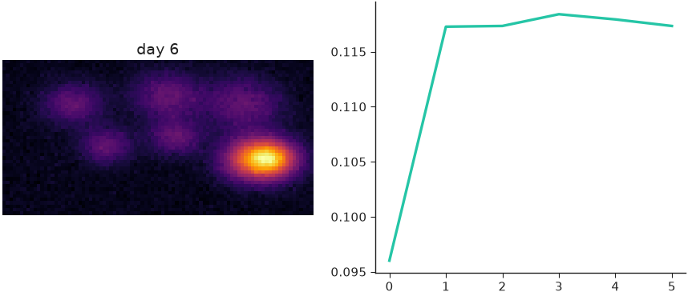

Animation¶
nicefigs animates maps in two ways: animate_maps()
for one map over a stack of frames, and
render_animation() for frames you draw yourself.
Animating a stack of maps¶
animate_maps() builds a
matplotlib.animation.FuncAnimation over a (T, H, W) stack of frames, on a
projected map (as_map=True, the default) or a plain image axes. It returns
(fig, ax, anim):
import nicefigs as nf
from nicefigs import data
nf.set_theme("paper")
lon, lat, frames = data.map_timeseries_cube(n_frames=6, shape=(45, 90))
fig, ax, anim = nf.animate_maps(
lon, lat, frames,
cmap="inferno",
titles=[f"day {i + 1}" for i in range(len(frames))],
colorbar_label="intensity",
width="half",
)
print(nf.save_animation(anim, "drift.gif", fps=4, dpi=60).name)

The colour scale is computed once across all frames — robust percentiles by
default, symmetric limits with diverging=True — so a colour means the same
value in every frame, and one colorbar serves them all.
Pass extent=(west, east, south, north) for a regional map, the same
convention as map(), or as_map=False to animate an image
stack without a geographic projection.
Saving¶
save_animation() writes a .gif with Pillow and
any other suffix, such as .mp4, with ffmpeg. It returns the path it wrote.
Note
Without ffmpeg, or if ffmpeg fails, an .mp4 request silently writes a
.gif next to it instead. Use the returned path, not the one you passed.
Drawing every frame yourself¶
render_animation() calls a draw(i) -> Figure
callback per frame, so a frame can hold several panels or anything else
matplotlib draws. It saves and closes each figure, then stitches the frames:
import numpy as np
import nicefigs as nf
from nicefigs import data
nf.set_theme("paper")
lon, lat, frames = data.map_timeseries_cube(n_frames=6, shape=(45, 90))
mean = frames.reshape(len(frames), -1).mean(axis=1)
def draw(i):
fig, axes = nf.subplots(1, 2, width="full", panel_aspect=0.8)
nf.image(frames[i], cmap="inferno", title=f"day {i + 1}", ax=axes[0])
axes[1].plot(np.arange(i + 1), mean[: i + 1])
return fig
path = nf.render_animation(draw, len(frames), "panels.gif", fps=4, dpi=60, max_workers=2)
print(path.name)
draw(len(frames) - 1) # the last frame, shown below

method="parallel", the default, renders frames in a process pool, which pays
off once frames are many or slow to draw. It needs a picklable draw: a
module-level function or a functools.partial of one, not a lambda or a
closure. Use method="sequential" otherwise.
Note
On macOS and Windows, worker processes are started with the spawn
method: each one re-imports your script. Put the call to
render_animation(..., method="parallel") under an
if __name__ == "__main__": guard, or every worker re-runs it. In a
notebook or an interactive session there, draw must also come from an
importable module; otherwise use method="sequential". Linux forks its
workers and needs neither.
Stitching frames rendered elsewhere¶
stitch_frames() turns a directory of
frame_000000.png, frame_000001.png, … into an MP4 (ffmpeg, libx264,
padded to even dimensions) or a GIF, with the same fallback as
save_animation():
from pathlib import Path
import matplotlib.pyplot as plt
import nicefigs as nf
nf.set_theme("paper")
Path("frames").mkdir(exist_ok=True)
for i in range(4):
fig, ax = nf.subplots(width="third", aspect=1.0)
ax.plot([0, 1], [0, i])
fig.savefig(f"frames/frame_{i:06d}.png", dpi=60)
plt.close(fig)
print(nf.stitch_frames("frames", "movie.gif", fps=4).name)